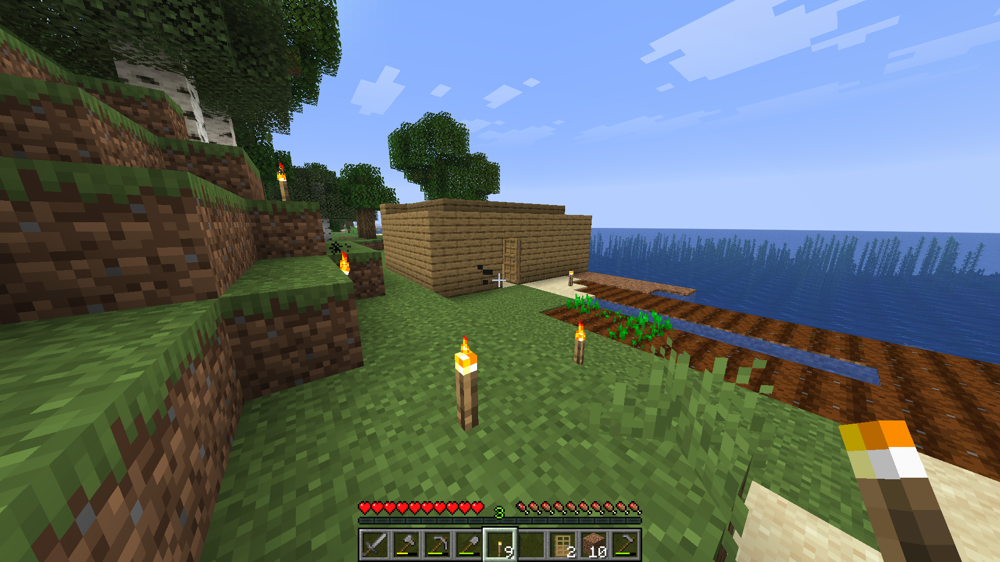

Light a Build Without Losing Its Atmosphere

Lighting can make the same room feel cozy, dramatic, or exposed. Start by deciding where players need to see and move safely, then choose fixtures that fit the build's materials and mood.
Plan for function first
Light entrances, stairs, corridors, work areas, and corners where you spend time. In a survival base, spread light through the areas you want protected from hostile mob spawns and check shadowed spaces after placing the main fixtures. Follow current in-game spawning rules for your version if exact light thresholds matter; this guide focuses on practical placement rather than a fixed block-count formula.
Use more than wall torches
Mix light sources into the design: hang lanterns from beams, use hidden lighting beneath slabs or behind trim, and place lamps beside paths. Repeating the same fixture at every wall can make a build look flat. Instead, use one style for main rooms and a related accent for work corners or outdoor paths. Keep important blocks reachable and avoid hiding a light source where it no longer illuminates the space you intended.
Check the room at night
Walk through the build after dark and look from normal player height. Notice dark patches, glare from repeated fixtures, and routes that are hard to read. Add or move a light rather than filling every empty surface. In creative mode you can test different arrangements quickly; in survival mode, build a few key fixtures first and expand when you have the materials. A consistent palette and thoughtful spacing make functional lighting feel like part of the architecture.
- Light paths, entrances, stairs, and frequently used work areas.
- Mix hidden and visible fixtures to suit the build.
- Check dark corners at night and adjust only where needed.